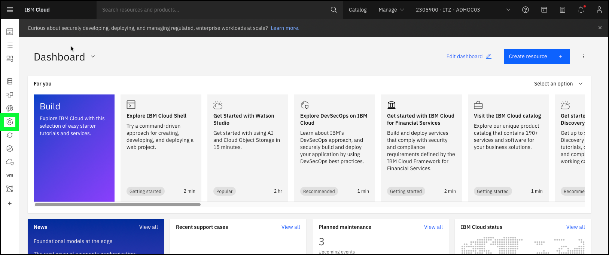
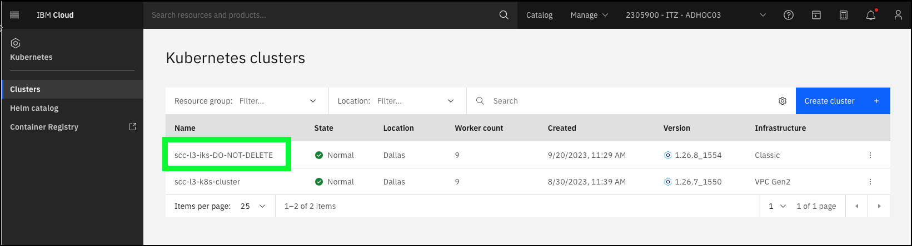
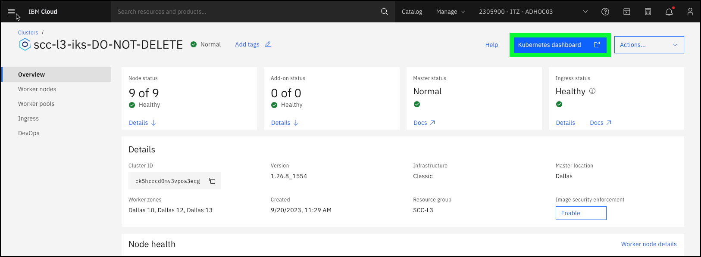
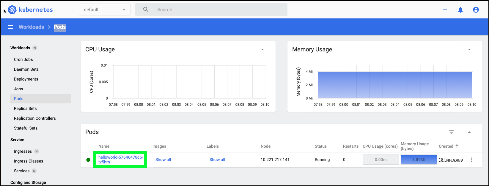
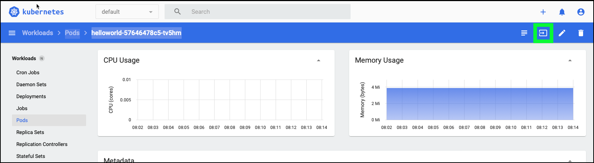
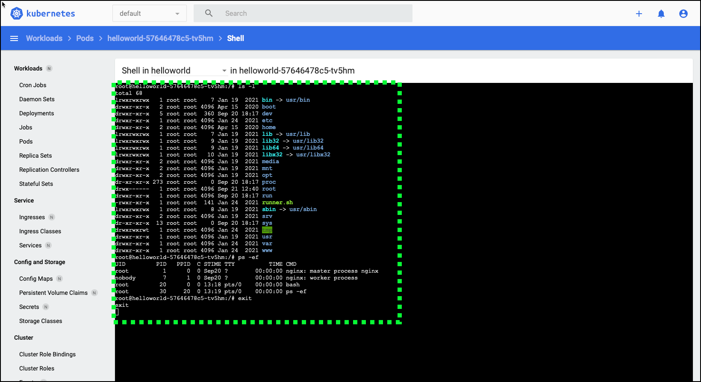

Configure Workload Protection scenario
In the Client Demonstrations section, you show the client how IBM Cloud Security and Compliance Center (SCC) Workload Protection (WP) can detect a potential threat.
To set up this scenario:
-
using the IBM Cloud portal, access a Kubernetes pod by using the "exec" command
-
run a couple of commands in the pod
Access the Kubernetes pod and run several commands
- Open a web browser to the IBM Cloud Portal.
- Click the account selection drop-down menu and select the 2305900 - ITZ - ADHOC03 account.

Note, if the browser window is narrow, you might see an account selection icon like this:  instead of the full account name.
instead of the full account name.
- Click the Kubernetes icon () in the left menu.

- Click scc-l3-iks-DO-NOT-DELETE in the table of clusters.

- Click the Kubernetes dashboard button.

The Kubernetes dashboard loads in a new browser tab or window.
- Click Pods in the left menu.

- Click the helloworld-57646478c5-tv5hm link in the Pods table.

- Click the Exec into pod () button.

- Copy (
 ) and paste (Ctrl v) the commands that follow in the Shell window.
) and paste (Ctrl v) the commands that follow in the Shell window.
Copy and paste issues
Some users have reported issues that pasting with Ctrl v doesn't always work. Make sure focus is in the IBM Cloud terminal window before doing Ctrl v. If it does not paste, try clicking the right mouse and selecting Paste from the context pop-up menu.

- Close the browser tab or window for the Kubernetes Dashboard.
The commands above do a simple listing of the contents of the current directory and lists the running processes.
The ability to exec into a running pod is a potential security vulnerability that bad actors might use to perform nefarious acts. Attackers with permissions might run ‘kubectl exec’ (the command line equivalent to what was performed above) to run malicious code and compromise resources within a cluster.
In the "High-level demonstration of Workload Protection" chapter you see an event was triggered based on the action you performed and demonstrate how WP can detect threats.